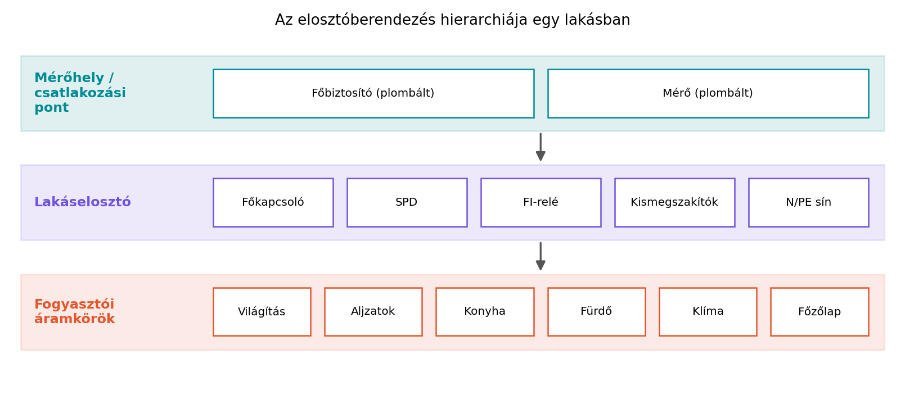

Statikus változat (mint a PDF-ben)
Lakásfelújításkor vagy új lakás kialakításakor a szerelőnek gyakran kell megterveznie vagy átalakítania a lakáselosztót. A régi olvadóbiztosítékos, esetleg védővezető nélküli táblák helyett ma már korszerű, moduláris készülékekből épített elosztókat kell készíteni. A lakáselosztó az épület villamos hálózatának az a pontja, ahol a mért, fogyasztói oldali energia szétosztása és védelme történik. Ha itt rossz a sorrend, hiányzik a megfelelő védelem, vagy a fázisok terhelése egyenlőtlen, az áramütéshez, tűzhöz, kényelmetlen üzemzavarokhoz vezethet. Ezért ebben az alfejezetben a lakás- és épületelosztó felépítését tanuljuk meg: milyen részekből áll, milyen sorrendben követik egymást a készülékek, és hogyan alakítjuk ki a védő- és nullavezető sínrendszerét.
A lakáselosztó (gyakran „lakáselosztó szekrény”, „biztosítéktábla”) egy olyan tokozott elosztóberendezés, amely a mérőhely felől érkező táplálást fogadja, és azt az egyes fogyasztói áramkörök felé szétosztja, miközben védelmet biztosít túláram, hibaáram és gyakran túlfeszültség ellen.
Definíció. A lakáselosztó olyan kisfeszültségű elosztóberendezés, amely a mérőhely után, a fogyasztói oldalon helyezkedik el, és tartalmazza a főkapcsolót, a védelmi készülékeket, valamint a vezetők csatlakoztatására szolgáló sínrendszereket.
Az elosztó fizikai felépítése moduláris elven működik: a készülékeket szabványos, 35 mm széles, kalapsín alakú fémprofilra, az úgynevezett DIN-sínre pattintják. A moduláris készülékek szélességét modulban adják meg (1 modul ≈ 17,5 mm, ellenőrizendő: a gyártói adatlap szerint). A DIN-sín a szekrény hátlapjára van rögzítve, és lehetővé teszi a készülékek gyors cseréjét.
Az alábbi ábra bal oldala a TS 35 kalapsín metszetét mutatja: a 27 mm-es talpát csavarozzák a szerelőlapra, a 35 mm széles peremek 7,5 mm-rel (a mélyebb változatnál 15 mm-rel) állnak ki, és ezekre pattannak a készülékek. A jobb oldalon a modulszélességek láthatók: az egypólusú kismegszakító 1 modul (≈ 17,5 mm), a kétpólusú FI-relé jellemzően 2, a háromfázisú kismegszakító 3 (≈ 52,5 mm), a négypólusú FI-relé 4 modul (≈ 70 mm).
Az elosztó méretezésekor a modulokat számoljuk össze (a tartalékhellyel együtt), és ehhez választunk sorszámot és sorhosszt. A sín méretei az MSZ EN 60715, a készülékszélességek a gyártói adatlap szerint ellenőrizendők (ellenőrizendő). A HTML-kiadásban a részekre mutatva olvasható a méretük.
Szabvány. A kisfeszültségű elosztóberendezésekre az MSZ EN 61439 szabvány vonatkozik (ellenőrizendő: pontos kiadás és szakasz). Az elosztószekrény védettségét az IP-kód szerint kell megválasztani (MSZ EN 60529), lakásban jellemzően IP40 vagy IP41 (ellenőrizendő: a beépítési hely szerint).
Az elosztószekrény anyaga általában szigetelő műanyag vagy fém. A műanyag szekrények könnyűek és nem igényelnek külön védőföldelést, de a fém szekrényeket mindig be kell kötni a PE-sínre. A védettség azt mutatja, hogy a szekrény mennyire véd a szilárd tárgyak és a víz behatolása ellen; beltéri lakáselosztóknál jellemzően IP40 (1 mm-nél nagyobb tárgyak ellen védett, víz ellen nem) elegendő, nedves helyiségben IP44 vagy magasabb kell (ellenőrizendő: a környezet és a szabvány szerint).
A lakáselosztóban a készülékek sorrendje nem esetleges, hanem a védelem logikáját követi. Egy tipikus sorrend a táplálás felől a fogyasztók felé haladva:
Szabály. A főkapcsolónak a fázisvezetőket le kell tudnia választani; az N-vezető bontásának szükségessége a hálózati rendszertől függ (TT-ben szükséges, TN-S-ben nem mindig kötelező, de ajánlott; ellenőrizendő: MSZ HD 60364-4-46/-5-53). A PEN-t soha nem szabad bontani. Lakásban a főkapcsoló jellemzően 40 A vagy 63 A névleges áramú, de a mérőhelyi főbiztosító értékéhez kell igazítani (ellenőrizendő: a hálózati engedélyes előírása).
A túlfeszültség-levezető (SPD) kiválasztása és bekötése a Túlfeszültség-védelmi eszközök (SPD): típusok és beépítés alfejezetben részletesen szerepel. Itt elegendő annyit tudni, hogy a lakáselosztóban általában 2. típusú (T2) levezetőt alkalmaznak, és a bekötése a lehető legrövidebb vezetékkel történjen, mert a hosszú vezeték rontja a védelmet.
Az áram-védőkapcsoló (FI) szerepe a hibavédelem és a kiegészítő védelem. Lakáselosztóban általában 30 mA kioldási érzékenységű FI-t használnak, mert ez védi az emberi életet közvetlen érintés esetén is. A FI nem véd túláram ellen, ezért túlterhelés ellen védeni kell: vagy az előtte lévő túláramvédelem (pl. a főbiztosító) névleges árama legfeljebb a FI névleges árama, vagy a FI-t a mögötte lévő áramkörök egyidejű terhelésére, a gyártói koordinációs adatok szerint méretezzük (ellenőrizendő: MSZ HD 60364-5-53 és gyártói adatlap). A kismegszakítók névleges áramainak puszta összege nem méretezési feltétel.
Hogyan néz ki mindez a szekrényben? Az alábbi ábra egy háromfázisú lakáselosztót mutat. A doboz (1) kitörhető bevezetőin érkezik a betápláló kábel, a két DIN-sínen (2) felül a Q1 főkapcsoló (3), a túlfeszültség-levezető (4) és a Q2 FI-relé (5) ül, alul a kismegszakítók (6). A FI kimenetéről a fésűs sín (7) osztja a fázist a kismegszakítókra L1–L2–L3 sorrendben; a főzőlap egyetlen háromfázisú kismegszakítót (12) kap, mellette tartalékhely (8) van vakfedéllel. Alul a szigetelt tartón ülő N-sín (9) és a PE-sín (10) látható, a fedlap (11) pedig csak a készülékek kezelőfelületét engedi ki, alatta feliratsávval.
A rajzon az SPD bekötése az egyszerűség kedvéért nem látszik; a valóságban a főkapcsoló után, a lehető legrövidebb vezetékkel kötjük a fázisokra és a PE-sínre. A HTML-kiadásban a fedlap és a vezetékek rétege kikapcsolható, a részekre mutatva pedig olvasható a szerepük.
A lakáselosztóban a nullavezetők és a védővezetők csatlakoztatása sínrendszerrel történik. Ezek a sínek általában a szekrény alján vagy oldalán helyezkednek el, és csavaros kapcsokkal fogadják a vezetékeket.
PE-sín: A védővezető (PE) sín fémből készül, és közvetlenül, nagy keresztmetszetű vezetővel csatlakozik a bejövő PE vezetőhöz. A szekrény fém részeit, a DIN-sínt (ha fém), valamint minden védővezetőt ehhez a sínhez kell kötni. A PE-sín a szekrényben nem szakaszolható, és nem köthető össze a N-sínnel a FI után. A védővezető keresztmetszete azonos anyag esetén 16 mm²-ig a fázisvezetőével megegyező, felette a szabvány táblázata vagy számítás szerint kisebb is lehet (ellenőrizendő: MSZ HD 60364-5-54 aktuális táblázata).
N-sín: A nullavezető sínje szigetelten van rögzítve, mert a nullavezető aktív vezető, és üzemszerűen áram folyik rajta. Ha a FI előtt és után is vannak nullavezető csatlakozások, akkor a FI előtti és utáni N-szakaszokat szigorúan el kell különíteni, különben az üzemi áram egy része a FI mellett kerüli meg az áramváltót, és a FI téves kioldást vagy érzékenységvesztést mutat. A FI után a N-sín nem köthető össze a PE-sínnel, mert az üzemi áram egy része a PE-n térne vissza, ami differenciaáramot okozna.
Ha az elosztóban két FI-csoport van, mindegyiknek saját N-sínje van, és egy áramkör nullája csak annak a FI-nek az N-sínjére kerülhet, amelyik után a kismegszakítója ül. Az alábbi ábra bal oldalán az F2 kör (a Q2 csoportban) helyesen az N1 sínre csatlakozik. A jobb oldalon a nullát tévesen a Q3 csoport N2 sínjére kötötték: a kör árama így a Q2-n befelé, a Q3-on visszafelé folyik, mindkét FI különbözeti áramot érzékel, és terheléskor mindkettő kiold.

Hibakereséskor ez a hiba arról ismerhető fel, hogy egy kör bekapcsolásakor egy másik csoport FI-je is kiold. A HTML-kiadásban a helyes és a hibás változat külön nézetben hasonlítható össze.
Egyenpotenciálra hozás (EPH): A lakáselosztóban a PE-sínhez csatlakozik a fő egyenpotenciálra hozó vezető, amely a víz-, gáz- és fűtéscsövek, valamint a fém szerkezetek felé megy. Ez a Földelés és egyenpotenciálra hozás fejezetben részletesen szerepel. A lényeg: az elosztó a védővezető-rendszer központi pontja, ahonnan az EPH elindul.
Háromfázisú lakáscsatlakozásnál az egyes fogyasztói áramköröket úgy kell elosztani az L1, L2, L3 fázisok között, hogy a fázisok terhelése közel azonos legyen. Ez csökkenti a nullavezető áramát, javítja a feszültség-szimmetriát, és megakadályozza, hogy egy fázis túlterhelődjön, míg a másik kihasználatlan marad.
A terheléselosztásnál a nagyobb fogyasztókat (mosógép, mosogatógép, sütő, bojler, klíma) lehetőleg külön fázisra kell tenni, a világítási áramköröket pedig egyenletesen elosztani. A háromfázisú bekötésű főzőlap zónái a három fázis között oszlanak meg, ezért a terhelése fázisonként eltérhet attól függően, mely zónák működnek; a bekötést a gyártói utasítás határozza meg (egyes típusok kétfázisúak).
Szabály. A fázisonkénti egyidejű áram nem haladhatja meg a fázisvezető terhelhetőségét, és a főbiztosító névleges áramát. A terheléselosztást a tervezéskor úgy kell elvégezni, hogy a legnagyobb fázisáram és a legkisebb fázisáram közötti eltérés lehetőleg 20%-on belül maradjon (ellenőrizendő: a tervezési gyakorlatban ajánlott érték).
Az elosztóban célszerű tartalékhelyet hagyni a későbbi bővítésekhez. A gyakorlatban legalább 20-30% szabad modulhelyet szokás fenntartani (ellenőrizendő: az adott projekt igénye szerint). Ez lehetővé teszi új áramkörök, például klíma, napelem vagy elektromosautó-töltő későbbi beépítését anélkül, hogy az egész elosztót ki kellene cserélni.
Az alábbi rétegábra a lakáselosztó hierarchiáját mutatja a mérőhelytől a fogyasztói áramkörökig.

A kapcsolási vázlat egy lehetséges lakáselosztó felépítést mutat egyvonalas formában. A bejövő vonal négy vezetőt jelöl (L1, L2, L3, N; „/ 4”), mert a négypólusú főkapcsoló (Q1) és FI-relé (Q2) az N-et is kapcsolja, a FI pedig csak így érzékeli a differenciaáramot. A főkapcsoló után a túlfeszültség-levezető (SPD) csatlakozik a fázisok és a PE-sín közé. Ezután a FI-relé következik; utána az N leágazik az N-sínre, a FI utáni fázisgyűjtőről pedig a kismegszakítók (Q3, Q4, Q5) párhuzamos ágakon táplálják az egyes áramköröket. Az N-sín a FI után van, a PE-sín a bejövő PE-hez csatlakozik; a lakáselosztóban (TN-S szakasz) az N-sín és a PE-sín között nincs összekötés.

Tervezzük meg egy 80 m²-es, háromfázisú csatlakozással rendelkező lakás elosztóját. A lakásban a következő fogyasztói áramkörök lesznek:
A beépített teljesítményt összegezve (a főzőlap 3 fázisra oszlik): - Fázisonkénti hozzávetőleges terhelés: - L1: világítás 1 (10 A), aljzatok 1 (16 A), mosogatógép (16 A), főzőlap 1/3 (16 A) → összesen 58 A egyidejű csúcs esetén, de a valós egyidejűség kisebb. - L2: világítás 2 (10 A), sütő (16 A), mosógép (16 A), főzőlap 1/3 (16 A) → 58 A - L3: bojler (16 A), klíma (10 A), aljzatok 2 (16 A), főzőlap 1/3 (16 A) → 58 A
Ez a durva összegzés azt mutatja, hogy a fázisok terhelése kiegyenlített. A tényleges egyidejű áram kisebb, mert nem minden fogyasztó működik egyszerre. A mérőhelyi főbiztosító 3×25 A lehet, a lakáselosztó főkapcsolója 40 A, a FI-relé pedig 40 A / 30 mA.
Számítás. Ellenőrizzük a főkapcsoló és a FI névleges áramának elegendőségét. Tegyük fel, hogy az egyidejű teljesítmény 10 kW, a teljesítménytényező 0,9. A háromfázisú áram:
Ez az érték jóval a 40 A-es főkapcsoló és FI alatt van, tehát a választás megfelelő. A kismegszakítók névleges áramát az egyes áramkörök vezetékeinek terhelhetősége és a fogyasztók indítási árama határozza meg – ezt a Kismegszakítók és kioldási jelleggörbék alfejezetben tárgyaljuk.
A fázisonkénti elosztásnál ügyeljünk arra, hogy a nagyobb egyfázisú fogyasztók (mosógép, mosogatógép, bojler) külön fázisra kerüljenek, és a két fűtőjellegű, tartós nagy fogyasztó (bojler, sütő) se legyen azonos fázison. A példában ez teljesül: mosogatógép L1, mosógép és sütő L2, bojler L3. A főzőlap zónái a három fázison oszlanak meg; a példában tanulási egyszerűsítésként fázisonként egyharmadot számolunk.
Szabvány. A lakáselosztó kialakításakor az MSZ HD 60364-4-41 (hibavédelem), az MSZ HD 60364-5-52 (vezetékméretezés és szerelési módok) és az MSZ HD 60364-5-53 (védelmi készülékek kiválasztása) előírásait kell követni (ellenőrizendő: a pontos szakaszok és kiadások). A kismegszakítókra az MSZ EN 60898-1, az áram-védőkapcsolókra az MSZ EN 61008-1 (FI) vagy MSZ EN 61009-1 (FI-megszakító kombináció) vonatkozik.
Egy régi társasházi lakás felújításakor a szerelő azt tapasztalta, hogy a lakáselosztóban csak két olvadóbiztosíték volt: az egyik az összes aljzatot, a másik az összes világítást táplálta. Védővezető nem volt, a konnektorok kétvezetékesek voltak. A felújítás során teljesen új elosztót építettek be: a mérőhely után 5 erű kábel jött, a lakáselosztóba 40 A főkapcsoló, 40 A/30 mA FI, és 12 darab kismegszakító került. A fázisokat úgy osztották el, hogy a mosógép és a mosogatógép külön fázisra, a konyhai aljzatok a harmadik fázisra kerültek. A régi alumínium vezetékeket rézre cserélték, és minden aljzathoz védővezetőt húztak. Az új elosztóval a lakás biztonságos és bővíthető lett, és a FI-relé azonnal leoldott, amikor egy hibás kenyérpirítót csatlakoztattak – ez megmutatta a védelem működését.
A lakáselosztó tervezésekor az alábbi lépéseket követheted:
N és PE összekötése az elosztóban a FI után. Következmény: az üzemi áram egy része a PE-n tér vissza, a FI ezt hibaáramnak látja, és terheléskor kiold (nemkívánatos kioldás); kis terhelésnél nem old ki, de egy testzárlat hibaáramának egy része az N-en tér vissza, így a FI érzékenysége romlik, és a PE-n üzemi áram folyik. Helyes: a N és PE sínek a FI után szigorúan elkülönítve.
A főkapcsoló és az N-vezető bontása nincs tisztázva. Ha a főkapcsoló csak a fázisokat szakaszolja, az N-vezetőn munka közben is megjelenhet feszültség (pl. hibás N–PE összekötés vagy visszatáplálás esetén), ezért a munkavégzés előtt az öt biztonsági szabály szerint feszültségmentességet kell mérni. Az N bontásának szükségessége a rendszertől függ (TT-ben szükséges, TN-S-ben ajánlott); a PEN-t soha nem szabad bontani (ellenőrizendő: MSZ HD 60364-4-46/-5-53).
A fázisok egyenlőtlen terhelése. Ha az összes nagy fogyasztót ugyanarra a fázisra kötik, a fázisvezető túlterhelődhet, és a főbiztosító leoldhat, miközben a másik két fázis alig terhelt. Helyes: a terheléselosztás megtervezése.
A túlfeszültség-levezető hosszú vezetékkel bekötve. A hosszú bekötő vezeték induktivitása rontja a levezető védelmi szintjét. Az SPD bekötése a lehető legrövidebb legyen, a fázis és a PE közötti távolság minimális.
Tartalékhely hiánya. Ha nincs szabad modulhely, később a bővítés csak új elosztó beépítésével oldható meg, ami drága és bonyolult. Helyes: 20-30% szabad hely fenntartása.
1. feladat (A) Sorold fel a lakáselosztó fő részeit a táplálás felől a fogyasztók felé haladva, és röviden írd le mindegyik szerepét.
2. feladat (A) Mi a DIN-sín szerepe, és mekkora a szabványos szélessége?
3. feladat (B) Egy lakás egyidejű teljesítménye 12 kW, háromfázisú, 400 V, cosφ = 0,9. A mérőhelyi főbiztosító 3×25 A. Számítsd ki az egyidejű áramot, és válassz megfelelő főkapcsolót (40 A vagy 63 A). Ellenőrizd, hogy a 40 A-es FI-t védi-e túlterhelés ellen a főbiztosító.
4. feladat (B) Rajzold le egyvonalas kapcsolással egy lakáselosztó felépítését, amely tartalmazza a főkapcsolót, egy FI-relét, és négy kismegszakítót. Jelöld a N- és PE-sínt is.
5. feladat (C) Adott a következő fogyasztói lista: mosógép (16 A), mosogatógép (16 A), bojler (16 A), klíma (10 A), sütő (16 A), világítás (2×10 A), aljzatok (2×16 A). Oszd el a fogyasztókat a három fázis között úgy, hogy a fázisok terhelése kiegyenlített legyen. Indokold a választásodat.
6. feladat (D) Egy lakáselosztóban a FI-relé rendszeresen leold, amikor a mosógép működik. A kismegszakító nem old le. Mi lehet az ok, és hogyan javítanád?
Önellenőrzés – válaszok
1. feladat megoldása
A lakáselosztó fő részei: - Bejövő kapcsok: fogadják a mérő felől érkező kábelt. - Főkapcsoló: leválasztja az egész elosztót. - Túlfeszültség-levezető (SPD): túlfeszültség ellen véd. - FI-relé: hibaáram-védelem. - Kismegszakítók: az egyes áramkörök túláramvédelme. - N-sín: a nullavezetők csatlakoztatására. - PE-sín: a védővezetők és az EPH csatlakoztatására.
2. feladat megoldása
A DIN-sín egy 35 mm széles, kalapsín alakú fémprofil, amelyre a moduláris készülékeket pattintják. A szélessége 35 mm, a készülékek moduljai ehhez illeszkednek (1 modul ≈ 17,5 mm).
3. feladat megoldása
Adott: , , . Keresett: . Képlet:
Behelyettesítve:
Az egyidejű áram körülbelül 19 A. A 40 A-es főkapcsoló elegendő, mert nagyobb, mint 19 A; a 40 A-es FI-t a 3×25 A főbiztosító (legfeljebb 25 A) túlterhelés ellen védi, ezért a FI nem terhelhető túl.
4. feladat megoldása
Az egyvonalas kapcsolási rajzot szövegesen így lehet leírni: a bejövő L1, L2, L3, N, PE vezetők a lakáselosztó kapcsaira csatlakoznak. A fázisok a főkapcsolóhoz mennek, onnan a FI-reléhez, majd a FI után a négy kismegszakítóhoz. A N-sín a FI után közös, a PE-sín végig közös. A rajz hasonló a fenti circuit ábrához, négy kismegszakítóval.
5. feladat megoldása
A fogyasztók elosztása: - L1: mosógép (16 A), sütő (16 A), világítás 1 (10 A) → összesen 42 A - L2: mosogatógép (16 A), aljzatok 1 (16 A), világítás 2 (10 A) → összesen 42 A - L3: bojler (16 A), aljzatok 2 (16 A), klíma (10 A) → összesen 42 A
Így mindhárom fázis terhelése közel azonos. A fűtőjellegű, tartós nagy fogyasztók (bojler, sütő) különböző fázisra kerültek, és a négy legnagyobb fogyasztó (mosógép, mosogatógép, bojler, sütő) közül fázisonként legfeljebb kettő van.
6. feladat megoldása
A tünet: a FI leold, a kismegszakító nem. Ez hibaáramra utal, nem túláramra. Valószínű ok: a mosógépnél szigetelési hiba van (pl. a fűtőszál vagy a motor szigetelése átvezet), és a hibaáram a védővezetőn folyik el, amit a FI érzékel. Javítás: a mosógépet meg kell vizsgálni, szigetelési ellenállást mérni, a hibás alkatrészt cserélni. Ha a mosógép jó, akkor a bekötésben lehet hiba: pl. a N és PE felcserélve, vagy a nullavezető a FI után érintkezik a védővezetővel.
A lakás- és épületelosztó a mérőhely után elhelyezkedő, moduláris készülékekből álló elosztóberendezés. Fő részei: bejövő kapcsok, főkapcsoló, túlfeszültség-levezető (SPD), áram-védőkapcsoló (FI), kismegszakítók, valamint a N- és PE-sín. A készülékek sorrendje a védelem logikáját követi: először a főkapcsoló, majd az SPD, utána a FI, végül a kismegszakítók. A N-sín szigetelt, a FI után nem köthető össze a PE-sínnel; a PE-sín közös, és az egyenpotenciálra hozás innen indul. A fázisok közötti terhelést kiegyenlítetten kell elosztani, és tartalékhelyet kell hagyni a bővítéshez. A tervezéskor a mérőhelyi főbiztosító értékéhez kell igazítani a főkapcsolót és a FI-t. Továbbvitt eredmény. Az itt megismert elosztófelépítést használjuk az Elosztó szerelése, kapcsolási rajz és feliratozás alfejezetben a bekötéshez, a Kismegszakítók és kioldási jelleggörbék alfejezetben a kismegszakítók kiválasztásához, valamint a Földelés és egyenpotenciálra hozás fejezetben a védelmi koncepció kialakításához. A legfontosabb képletek: a háromfázisú áram számításához, és a moduláris készülékek 35 mm-es DIN-sínre szerelése. A biztonsági szabály: a N és PE sínek a FI után szigorúan elkülönítve, és minden hálózati feszültségű munkát csak jogosult személy végezhet.